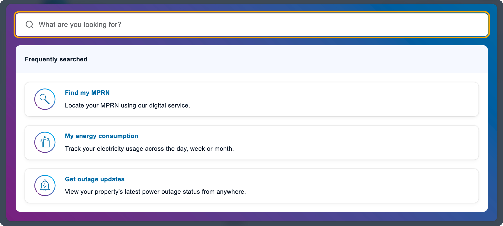
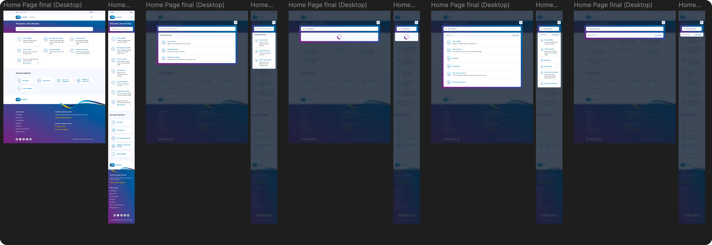
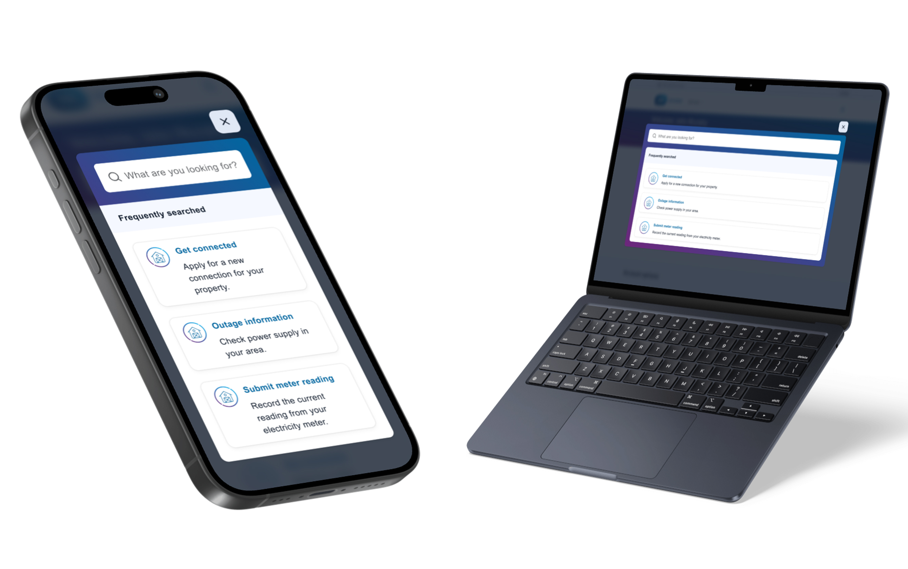

Home  ESB Networks Online Account
ESB Networks Online Account
The ESB Networks customer portal is an online account that allows people to apply for services, view their electricity usage and use various other digital services provided by ESB Networks such as power-check.
I worked on this project as a Business Analyst (BA) initially, writing user stories, running refinement sessions and managing sprint planning sessions with developers and testers. After almost a year as a BA I moved to the design team where I got to work on the project from the next stage of digital development.
Once on design, I would work with the BA and Product Owner (PO) to help design and solve problems that would be developed to improve the Customer Portal and overall online experience for ESB networks customers .

One of my first tasks as a designer on this project was to design the UX and UI for a spotlight search-bar. As the online account’s features grew, there became the problem of no easy way to quickly find a specific service. Hence, a search bar was decided on for the portal.

In the first stage of design, research was essential, so I quickly grabbed various examples from websites I’ve used that I felt worked. I referenced the follow search UX designs:
My focus here was functionality, the ESB networks online account is one that provides a practical service, not one for casual media consumption, so I design the search menu to reflect this.
After various iterations, we decided to use a dark modal to cover the background of the already present content - so that it does not conflict with the search menu. We mapped out and prototyped various key journeys in both mobile and desktop layouts as seen below. These prototypes were tested using Maze user testing and internal staff testing to ensure the designs were meeting accessibility and usability standards.

After completing the process of UX research, wireframes , designing and testing user journeys, the final product was presented and approved for development by the online account team.
